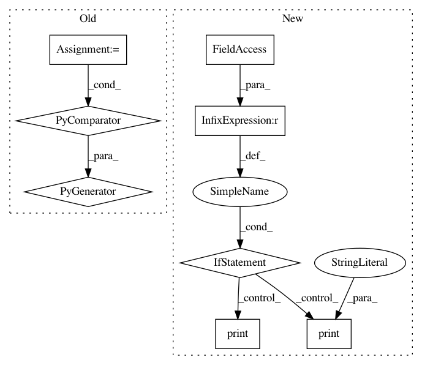

b88d36cd9c8056e15607a40f5d10a9072ab84b22,train_vidreid_xent.py,,main,#,87
Before Change
print("Initializing model: {}".format(args.arch))
model = models.init_model(name=args.arch, num_classes=dataset.num_train_pids, loss={"xent"})
print("Model size: {:.5f}M".format(sum(p.numel() for p in model.parameters())/1000000.0))
criterion = CrossEntropyLabelSmooth(num_classes=dataset.num_train_pids, use_gpu=use_gpu)
optimizer = init_optim(args.optim, model.parameters(), args.lr, args.weight_decay)
After Change
best_epoch = 0
print("==> Start training")
if args.fixbase_epoch > 0:
print("Train classifier for {} epochs while keeping base network frozen".format(args.fixbase_epoch))
for epoch in range(args.fixbase_epoch):
start_train_time = time.time()
train(epoch, model, criterion, optimizer_tmp, trainloader, use_gpu, freeze_bn=True)
train_time += round(time.time() - start_train_time)
del optimizer_tmp
print("Now open all layers for training")
for epoch in range(start_epoch, args.max_epoch):
start_train_time = time.time()
train(epoch, model, criterion, optimizer, trainloader, use_gpu)
train_time += round(time.time() - start_train_time)
In pattern: SUPERPATTERN
Frequency: 3
Non-data size: 8
Instances
Project Name: KaiyangZhou/deep-person-reid
Commit Name: b88d36cd9c8056e15607a40f5d10a9072ab84b22
Time: 2018-07-06
Author: k.zhou@qmul.ac.uk
File Name: train_vidreid_xent.py
Class Name:
Method Name: main
Project Name: AllenCellModeling/pytorch_fnet
Commit Name: 2b4dfea5674a6b6b4d6556d7546a387f41f947fa
Time: 2017-11-10
Author: chek.o@outlook.com
File Name: tools/colorize_tifs.py
Class Name:
Method Name:
Project Name: KaiyangZhou/deep-person-reid
Commit Name: b88d36cd9c8056e15607a40f5d10a9072ab84b22
Time: 2018-07-06
Author: k.zhou@qmul.ac.uk
File Name: train_imgreid_xent.py
Class Name:
Method Name: main